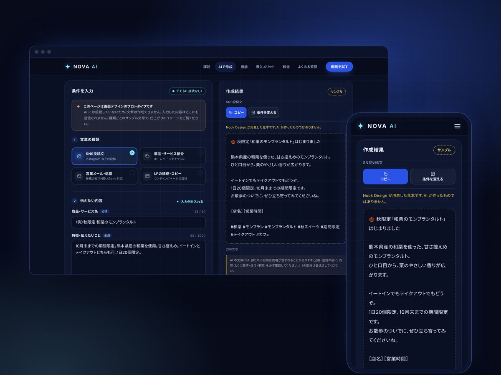
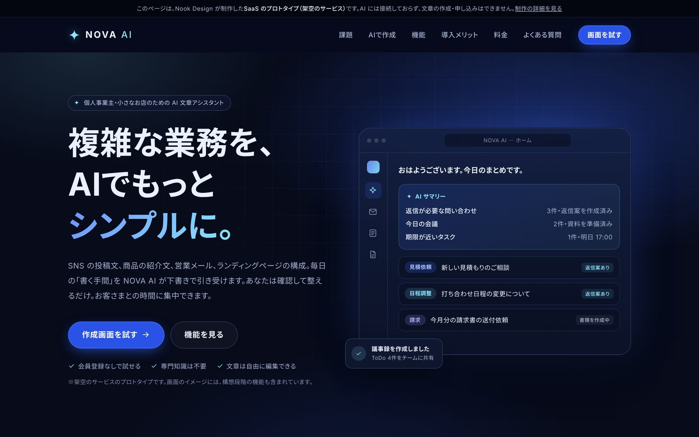
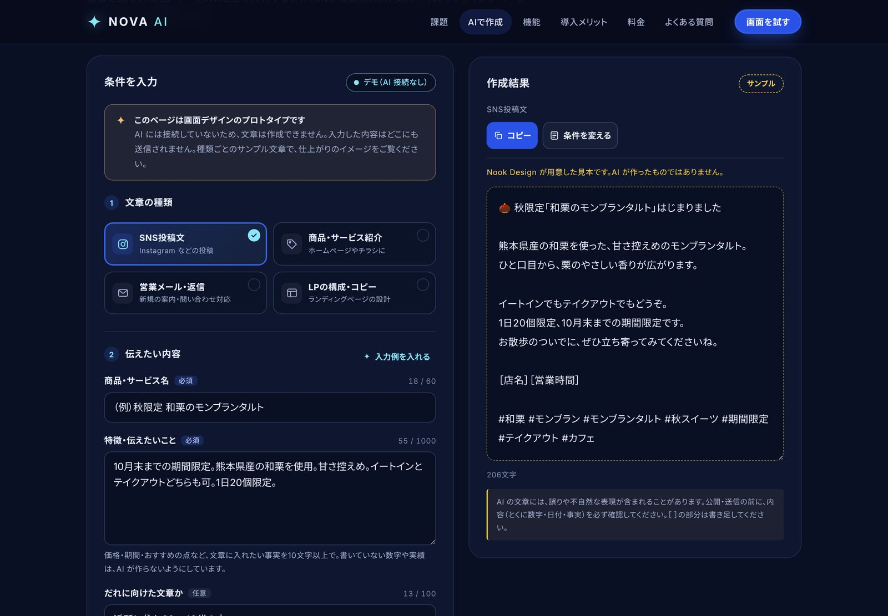
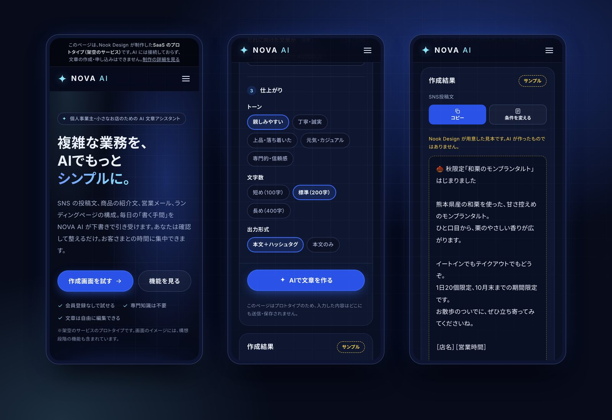
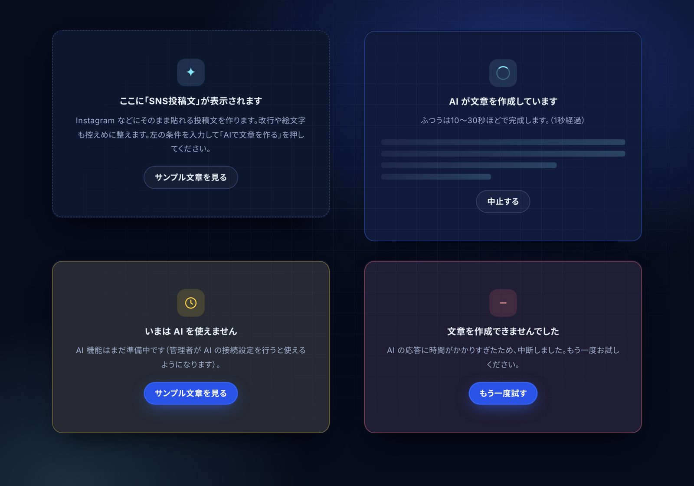
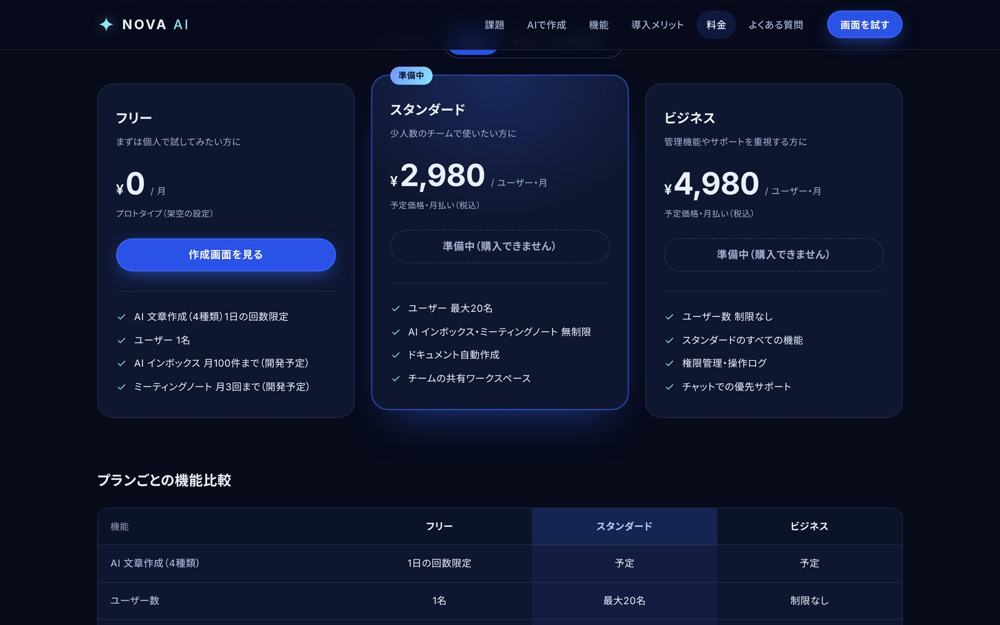

WORKS｜SAAS UI/UX・WEB APPLICATION
NOVA AI
AI文章作成SaaS（プロトタイプ）
個人事業主や小さなお店が、SNS の投稿文・商品紹介・営業メール・ランディングページの文章を AI で下書きする――そんなサービスを想定して、ランディングページと文章作成画面の UI/UX 設計・デザイン・実装を行いました。
架空のサービスのプロトタイプです。実際に利用できるサービスではありません。AI との連携は試作の段階で、本物の AI での動作確認は行っていません。デモは AI に接続しておらず、文章はサンプル（見本）を表示します。

- 作品分類
- SaaS UI/UX・Webアプリケーション（プロトタイプ）
- 制作時期
- 2026年10月
- 担当範囲
- 企画・情報設計・UI/UX デザイン・LP デザイン・文章・フロントエンド実装・サーバー処理の試作
- 対応画面
- スマートフォン・タブレット・PC（幅320〜1920px）
- 使用技術
- HTML・CSS・JavaScript（フレームワークなし）
- 想定した構成
- Cloudflare Workers ＋ Claude API（試作・未公開）
01
デザインの意図
-
落ち着いた先進性
ダークネイビーを土台に、エレクトリックブルーと淡いシアンを差し色に限定。光の演出は控えめにして、AI サービスらしさと信頼感を両立させました。
-
迷わない入力の流れ
「種類 → 伝えたい内容 → 仕上がり」の3段階に整理。選択肢はプルダウンではなく、押して選ぶボタンにして、スマホでも少ない操作で選べるようにしました。
-
正直な表示
使える機能と構想中の機能、AI の文章とサンプル文章を、文言・印・枠線で区別。期待させすぎない画面を意識しました。
02
主な画面





03
実装した機能と、構想・未検証の機能
| 機能 | 状態 | 内容 |
|---|---|---|
| ランディングページ | 実装済み | 9つのセクション、スマホのメニュー、ページ内移動、FAQ の開閉、料金の月払い・年払いの切りかえ、比較表、案内のダイアログ |
| 文章作成画面 | 実装済み | 4種類の文章、入力チェック、状態表示、結果の編集・コピー・もう一度作る、サンプル文章。デモでは AI に接続せず、サンプルを表示 |
| レスポンシブ・操作性 | 実装済み | 幅320〜1920px で表示を自動確認。キーボード操作・読み上げ・「動きを減らす」設定に配慮 |
| サーバー処理 | 試作 | 入力チェック、送信元・大きさの制限、利用回数の制限、エラー時のわかりやすい表示。自動テストで確認したが、公開はしていない |
| AI（Claude API）との連携 | 試作・未検証 | 呼び出しの処理とエラー処理を試作。本物の AI での動作確認はしていません |
| AI インボックス・議事録・書類作成 | 構想のみ | ランディングページ上の画面イメージだけで、機能はありません |
| ログイン・決済 | 未実装 | 料金プランは画面デザインのみ |
※ 表は横にスクロールできます（スマートフォン）
04
技術的な工夫
-
フォーム設計
文字数カウンター、欄の下に出るエラー、最初のエラー欄への移動、入力例の自動入力。スマホで入力時に画面が拡大されないよう文字は16px以上にしています。
-
状態表示の統一
5つの状態を1か所で切りかえる作りにし、作成中は経過秒数と中止、失敗時は原因に合わせて「もう一度試す」か「条件を変える」を表示します。
-
結果の出どころの区別
本物の AI・確認用の模擬AI・サンプルの3種類を、印・説明文・枠線で区別。テスト用の結果が AI の結果に見えないようにしました。
-
AI 連携を想定した安全設計
APIキーはサーバー側だけで扱う設計にし、入力の検証、利用回数の制限、内部情報を出さないエラー表示を試作しました。
-
軽さと崩れにくさ
フレームワークを使わず、画像の代わりに HTML と CSS で画面イメージを描画。JavaScript が動かない環境でも主要な情報は読めます。
-
自動テスト
サーバー側23項目、ブラウザ操作64項目の自動テストを用意し、表示崩れや操作の不具合を確認しながら制作しました。
※ NOVA AI は Nook Design が制作実績として作った架空のサービスです。掲載している機能・料金・画面の文章は設計上の設定で、実在する同名・類似名のサービスや企業とは関係ありません。画像は制作した画面のスクリーンショットです。